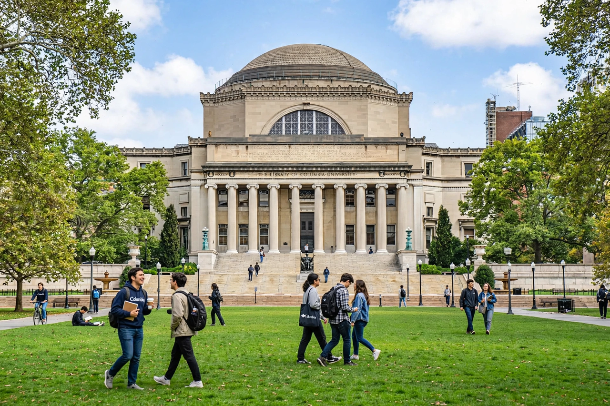

| Motto | In lumine Tuo videbimus lumen ("In Thy light shall we see light") |
|---|---|
| Established | 1754; as King's College |
| Type | Private Ivy League research university |
| Location | Morningside Heights, Manhattan, New York City, United States |
| Endowment | Over $14 billion |
| Students | Approx. 35,000 |
| Campus | Urban, 299 acres (total holdings) |
Columbia University, officially Columbia University in the City of New York, is a private Ivy League research university in New York City. Established in 1754 as King's College by royal charter from King George II, Columbia is the oldest institution of higher education in New York and the fifth-oldest in the United States.

Low Memorial Library, the centrepiece of the Morningside Heights campus.
King's College suspended operations during the American Revolution and reopened in 1784 as Columbia College, renamed Columbia University in 1896 when it moved to its present Morningside Heights campus, designed by McKim, Mead & White. Alumni and affiliates include five Founding Fathers, numerous heads of state, and over 100 Nobel laureates. Columbia administers the Pulitzer Prizes annually.
The university comprises twenty schools, including Columbia College, the Fu Foundation School of Engineering and Applied Science, and professional schools of law, business, medicine and journalism. Its undergraduate Core Curriculum, centred on great books and required courses in literature, philosophy, art and music, is among the most influential in American education. Beat Generation writers Allen Ginsberg and Jack Kerouac were students at Columbia College.
The main campus occupies six city blocks in Morningside Heights, anchored by Low Memorial Library — a National Historic Landmark — facing Butler Library across College Walk. Other campuses include Manhattanville, the medical centre in Washington Heights, and Lamont-Doherty Earth Observatory across the Hudson River.